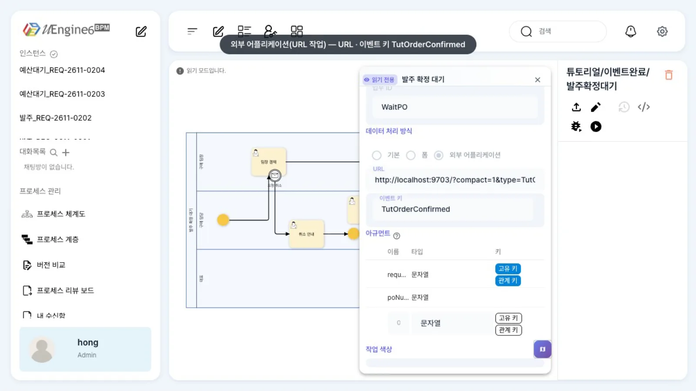
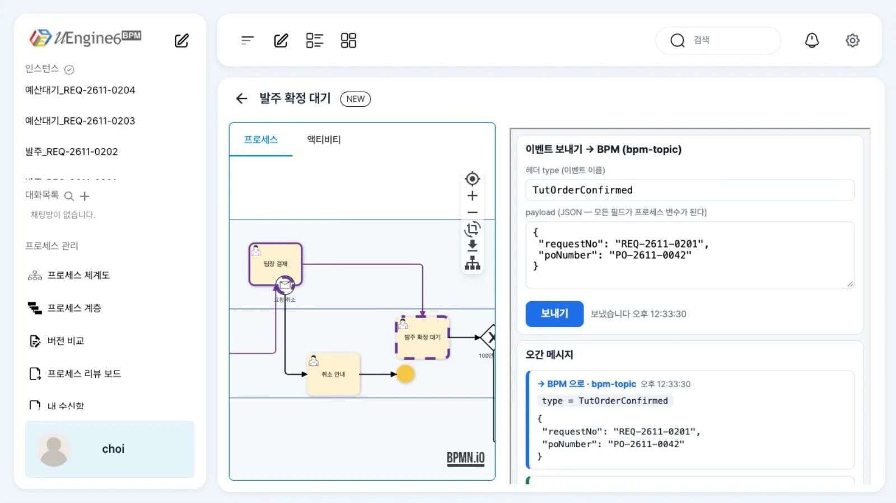
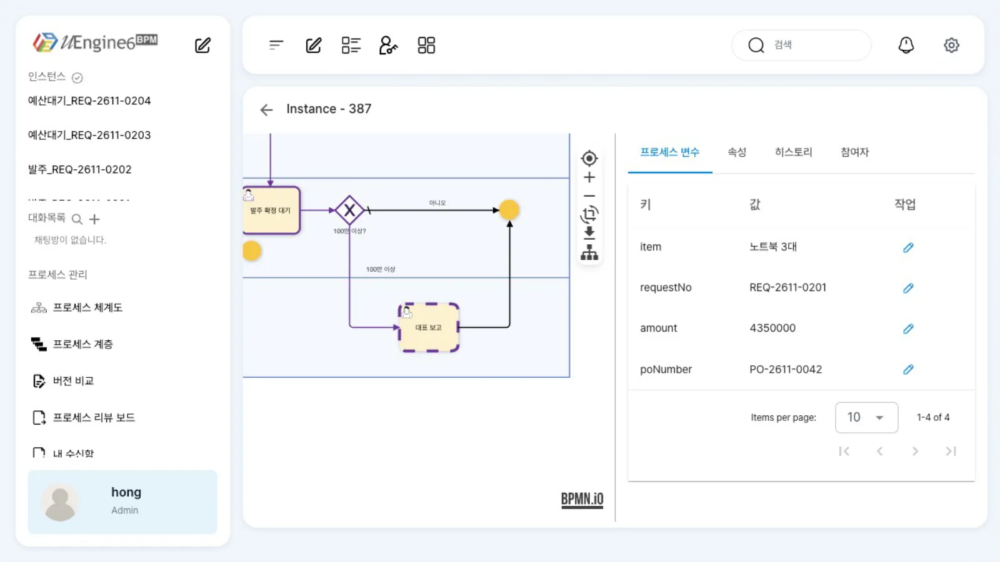
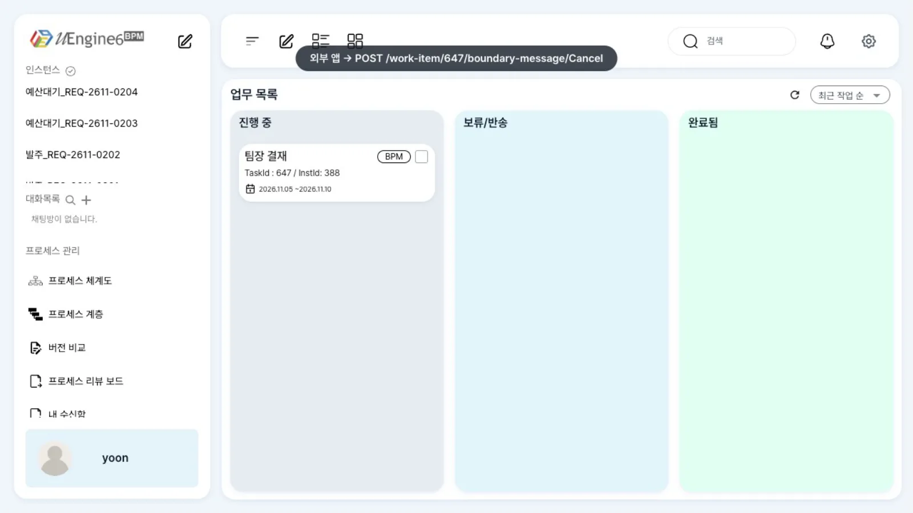
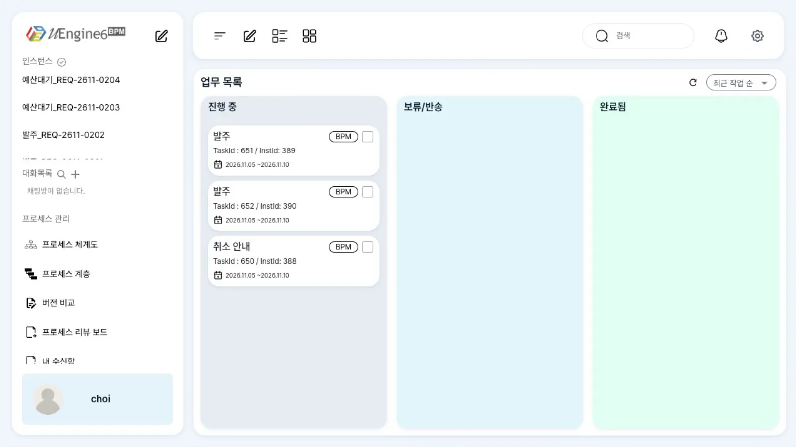

사람이 「완료」를 누르는 대신, 다른 시스템이 보낸 이벤트가 기다리던 작업을 끝냅니다. 상관 키로 인스턴스를 찾고, payload는 변수가 되어 다음 분기를 정합니다. 결재 도중의 취소 요청(메시지 경계)과 여러 인스턴스를 한꺼번에 깨우는 방송도 다룹니다.
무엇을 · 왜#
프로세스에는 「누가 무엇을 끝낼 때까지 기다리는」 지점이 많습니다. 공급사의 발주 확정, ERP의 입고 처리, 예산 확정 등을 기다립니다. 그 일이 다른 시스템에서 일어난다면 BPM 작업을 사람이 다시 「완료」할 이유가 없습니다. 그 시스템이 낸 이벤트가 작업을 끝내게 합니다. BPMN의 받기 작업(Receive Task)·메시지 중간 이벤트와 같은 개념입니다.
uEngine6에서는 기다리는 활동에 이벤트 동기화(eventSynchronization)를 설정합니다.
| 무엇을 기다리나 | BPMN 요소 | uEngine6 설정 | 배포 때 등록되는 매핑 |
|---|---|---|---|
| 특정 인스턴스의 작업 하나 | 사용자 작업(받기 역할) | 작업 JSON eventSynchronization(s): eventType + 상관 키 아규먼트 |
eventType → 정의·활동, 상관 키 |
| 특정 인스턴스의 흐름 한 지점 | 메시지 중간 catch 이벤트 | eventKey + correlationKey |
eventKey → 정의·이벤트, 상관 키 |
| 실행 중인 모든 인스턴스의 그 지점 | 메시지(또는 신호) 중간 catch 이벤트 | eventKey만, 상관 키 없음 |
eventKey → 정의·이벤트, 상관 키 없음 |
| 진행 중인 작업에 들어온 요청 | 메시지 경계 이벤트 | 설정 없음. REST boundary-message로 발화 |
없음 |
이벤트가 들어오면 엔진은 다음 순서로 처리합니다(AsyncEventListener).
- 헤더
type으로BPM_EVENT_MAPPING을 찾습니다. - 매핑의 상관 키 필드 값을 payload에서 읽습니다(없으면 헤더
corrKey). - 그 값을
corr_key로 가진 실행 중 인스턴스를 찾아 payload의 모든 필드를 변수에 쓰고, 지금 실행 중인 활동 가운데 그 이벤트를 기다리는 첫 활동을 완료합니다. - 상관 키가 없는 매핑이면 실행 중인 모든 인스턴스에서 그
eventKey를 기다리는 이벤트를 깨웁니다. - 사람 작업이 끝나면
bpm-brodcast로TASK_COMPLETED가 나갑니다(이벤트로 시스템 잇기).
행위자 헤더 emnb와 이 스택의 설정#
사람 작업을 이벤트로 끝낼 때 엔진은 누가 끝냈는지 확인합니다. 헤더 emnb에 사용자 이름을 넣으면, 그 사람이 작업의 현재 담당자일 때만 끝내고 아니면 무시합니다(「Only the current work item owner can complete this task」, 담당자가 없으면 「Work item must be claimed before completion」).
이 브랜치(bmt/sds-process-test)는 원래 emnb가 반드시 있어야 합니다. 없으면 「header.emnb is required to complete a work item」으로 거절합니다.
이 튜토리얼의 시연 스택은 process-service에 다음 설정을 추가해 실행했습니다.
uengine:
messaging:
require-event-actor: false # 행위자 헤더가 없는 시스템 이벤트도 사람 작업을 끝낸다
계정계 예제처럼 시스템이 낸 이벤트(공급사 확정, 입금 확인)는 사람 행위자가 없기 때문입니다. 이 스위치는 시연 스택의 엔진에 더한 작은 패치(AsyncEventListener +13줄, 기본값 true)이고, 원래 브랜치에는 없습니다.
false여도 emnb를 붙이면 담당자 검사는 그대로 합니다. 운영에서는 기본값(true)을 두고, ERP 예제처럼 일한 사람을 emnb에 넣어 보내는 방식을 권합니다(ERP 예제).
따라 하기#
예제에는 두 정의가 있습니다.
튜토리얼/이벤트완료/발주확정대기: 최구매(구매 담당) → 윤팀장 「팀장 결재」(메시지 경계 「요청 취소」) → 최구매 「발주 확정 대기」(이벤트TutOrderConfirmed) → 100만 원 이상이면 김대표 「대표 보고」튜토리얼/이벤트완료/예산확정대기: 「예산 확정」(이벤트TutBudgetApproved, 상관 키 없음)을 기다렸다가 최구매 「발주」
- 기다리는 작업 보기.
튜토리얼/이벤트완료/발주확정대기를 열고 「발주 확정 대기」를 두 번 누릅니다. 「데이터 처리 방식」이 외부 어플리케이션이고, 「URL」과 「이벤트 키」TutOrderConfirmed가 있습니다. 아규먼트requestNo에 「관계 키」가 켜져 있습니다.
「발주 확정 대기」 패널 — 외부 어플리케이션, URL, 이벤트 키 - 작업 열기. 최구매의 업무 목록에 「발주 확정 대기」가 있습니다(결재는 윤팀장이 이미 했습니다). 카드를 열면 작업 화면 오른쪽에 URL 작업의 주소가 열립니다. 이 예제는 그 주소를 이벤트 콘솔로 두었고,
<%instance.corrkey%>자리에 이 인스턴스의 요청번호가 들어가 있습니다. - 이벤트 보내기. 공급사 시스템 대신 콘솔에서 발주 번호를 넣어 보냅니다. 곧
← BPM 이 알림 · bpm-brodcast줄에TASK_COMPLETED·「발주 확정 대기」가 찍힙니다. 업무 목록을 새로 고치면 카드가 사라집니다.{"requestNo": "REQ-2611-0201", "poNumber": "PO-2611-0042"}
작업 화면 안의 이벤트 콘솔 — 보낸 TutOrderConfirmed - 변수와 분기. 관리자 화면에서 인스턴스를 열면 변수
poNumber가 들어와 있고, 금액이 4,350,000원이라 게이트웨이가 「대표 보고」로 보냈습니다.
관리자 화면 — 변수 poNumber, 「대표 보고」로 진행 - 결재 중 취소(메시지 경계). 다른 요청(
REQ-2611-0202)은 윤팀장의 「팀장 결재」에 있습니다. 요청자가 철회하면, 외부 앱이 이 작업의 메시지 경계를 REST로 발화합니다. 호출자는 작업 담당자(윤팀장)의 토큰을 씁니다.윤팀장의 업무 목록에서 「팀장 결재」가 사라지고(curl -X POST http://localhost:9294/work-item/<팀장 결재 taskId>/boundary-message/Cancel \ -H "Authorization: Bearer $YOON_TOKEN" -H 'Content-Type: application/json' \ -d '{"parameterValues":{"취소사유":"요청자 철회"}}'CANCELLED), 최구매에게 「취소 안내」가 갑니다. 본문의parameterValues는 변수(취소사유)가 됩니다.
윤팀장의 「팀장 결재」 — 외부 앱이 boundary-message 를 부르기 직전 - 여러 인스턴스를 한꺼번에.
예산확정대기인스턴스 두 개가 「예산 확정」에서 기다립니다. 콘솔에서TutBudgetApproved를 상관 키 없이 보내면 두 인스턴스가 함께 깨어나 최구매의 업무 목록에 「발주」가 두 건 옵니다.
상관 키 없는 TutBudgetApproved 뒤 최구매의 업무 목록 — 「발주」 2건
설정 레퍼런스#
작업에 이벤트 동기화 달기#
패널의 「외부 어플리케이션」을 고르면 URL 작업(URLActivity)이 되고, 「이벤트 키」 목록이 eventSynchronizations로 저장됩니다. 「기본」 사용자 작업 패널에는 이벤트 키 칸이 없으므로, 화면 없이 기다리기만 하는 작업이면 XML에 HumanActivity + eventSynchronization을 직접 씁니다(아래 둘째 예).
{"_type": "org.uengine.kernel.URLActivity",
"url": "http://localhost:9703/?compact=1&type=TutOrderConfirmed&requestNo=<%instance.corrkey%>&poNumber=",
"eventSynchronizations": [{"eventType": "TutOrderConfirmed",
"attributes": [{"name": "requestNo", "className": "String", "isKey": true, "isCorrKey": true},
{"name": "poNumber", "className": "String"}],
"mappingContext": {"mappingElements": []}}]}
{"_type": "org.uengine.kernel.HumanActivity",
"eventSynchronization": {"eventType": "TutQuoteReplied",
"attributes": [{"name": "requestNo", "className": "String", "isKey": true, "isCorrKey": true}],
"mappingContext": {"mappingElements": []}}}
| 패널 칸 | JSON | 뜻 |
|---|---|---|
| URL | url |
작업 화면에 열 주소. <%instance.corrkey%>·<%instance.instanceId%>를 쓸 수 있습니다 |
| 이벤트 키 | eventSynchronizations[].eventType |
이 작업을 끝낼 이벤트 이름(헤더 type) |
| 아규먼트 · 관계 키 | attributes[].isCorrKey |
상관 키 필드. 인스턴스의 corr_key와 비교합니다 |
| 데이터 매핑 | mappingContext |
필드 이름과 변수 이름이 다를 때. 비워 두면 payload 필드가 같은 이름의 변수로 |
인스턴스의 corr_key는 메시지 시작이면 그 이벤트의 상관 키 값, API로 시작하면 POST /instance의 correlationKeyValue입니다.
curl -X POST http://localhost:9294/instance -H "Authorization: Bearer $YOON_TOKEN" -H 'Content-Type: application/json' -d '{
"processDefinitionId": "튜토리얼/이벤트완료/발주확정대기", "correlationKeyValue": "REQ-2611-0201",
"processVariableValues": [{"name":"requestNo","values":["REQ-2611-0201"]},{"name":"amount","values":[4350000]}]}'
이 정의는 첫 레인(「구매 팀장」)에 사람(윤팀장)이 정해져 있습니다. 이런 정의를 API로 시작할 때는 그 사람의 토큰으로 부릅니다. 다른 사람(관리자 포함)이 부르면 You (…) are not permitted to initiate this process로 거절됩니다.
메시지 중간 이벤트 (상관 키 있음 / 없음)#
// 한 인스턴스: <bpmn:intermediateCatchEvent> + <bpmn:messageEventDefinition/>
{"eventKey": "TutGoodsArrived", "correlationKey": "requestNo",
"eventSynchronization": {"eventType": "TutGoodsArrived",
"attributes": [{"name": "requestNo", "className": "String", "isKey": true, "isCorrKey": true}]}}
// 모든 실행 중 인스턴스(방송): eventKey 만
{"eventKey": "TutBudgetApproved"}
메시지 중간 이벤트 패널에는 「관계 키」·「서비스 경로」·「연산 참조」 칸만 있고 이벤트 키 칸이 없습니다. 이벤트 키는 XML로 넣습니다.
메시지 경계#
<bpmn:boundaryEvent id="Cancel" name="요청 취소" attachedToRef="Approve">
<bpmn:messageEventDefinition id="Cancel_def"/>
</bpmn:boundaryEvent>
| API | 본문 | 결과 |
|---|---|---|
POST /work-item/{taskId}/boundary-message/{경계 id} |
{"parameterValues": {이름: 값}} |
붙은 작업 CANCELLED, 경계 뒤 흐름 시작, 값은 변수로. 호출자는 작업 담당자여야 합니다 |
메시지 계약 (이 장)#
이벤트(헤더 type) |
상관 키 | payload | 끝내는 것 |
|---|---|---|---|
TutOrderConfirmed |
requestNo |
requestNo, poNumber |
「발주 확정 대기」 |
TutBudgetApproved |
없음 | budgetYear, note |
실행 중인 모든 「예산 확정」 |
알려진 제약#
- 메시지 경계는 화면에서 발화할 수 없습니다. 업무 화면·관리자 화면에 버튼이 없고, 경계 이벤트 패널에도 설정 칸이 없습니다. 외부 앱이나 curl로
boundary-message를 부르세요. 이 브랜치에서 확인한 발화 방법은 이 REST 호출뿐입니다. - 「기본」 사용자 작업 패널과 메시지 중간 이벤트 패널에는 이벤트 키 칸이 없습니다. 화면에서만 설정하려면 「외부 어플리케이션」(URL 작업)을 쓰고, 나머지는 XML로 넣습니다.
- 인스턴스 화면의 「이벤트 보내기」 버튼은 이 장의 대기 작업에는 나타나지 않습니다(
/instance/{id}/eventList가 빈 목록). - 상관 필드가 payload에도 헤더
corrKey에도 없으면, 엔진은 매핑의 상관 키 이름을 값으로 씁니다. 상관 키가 있는 이벤트는 반드시 그 필드를 담아 보내세요. - 같은 상관 키의 실행 중 인스턴스에는, 그 이벤트를 기다리는 활동이 없어도 payload가 변수로 쓰입니다.
- Kafka 모드에서는 이벤트 처리에 실패하면(담당자가 아님 등) 세 번 다시 시도한 뒤 로그만 남기고 넘어갑니다. 어디에도 「실패」 상태로 남지 않습니다.
확인 문제#
`TutOrderConfirmed`에 `"emnb": "kim"` 헤더를 붙여 보내면 「발주 확정 대기」가 끝나나요?
아닙니다. 이 작업의 담당자는 최구매(choi)입니다. 행위자 헤더가 있으면 엔진은 담당자와 같은지 확인하고, 다르면 거절합니다. 헤더를 빼거나(require-event-actor: false인 이 스택에서만) emnb: choi로 보내야 합니다.
`TutBudgetApproved`에 상관 키를 주지 않았는데 왜 두 인스턴스가 다 깨었나요?
「예산 확정」의 매핑에는 상관 키가 없습니다. 상관 키 없는 매핑으로 이벤트가 들어오면 엔진은 실행 중인 인스턴스 전부에서 그 eventKey를 기다리는 이벤트를 깨웁니다. 특정 인스턴스만 깨우려면 correlationKey와 상관 키 아규먼트를 설정하세요.
메시지 경계를 부르는 외부 앱은 왜 윤팀장의 토큰을 써야 하나요?
boundary-message는 경계가 붙은 작업을 끝내는(취소하는) 일이므로, 그 작업의 담당자만 부를 수 있습니다. 시스템이 부르게 하려면 그 작업을 시스템 계정 레인에 두거나, 요청자가 담당자가 되도록 설계를 바꾸세요.